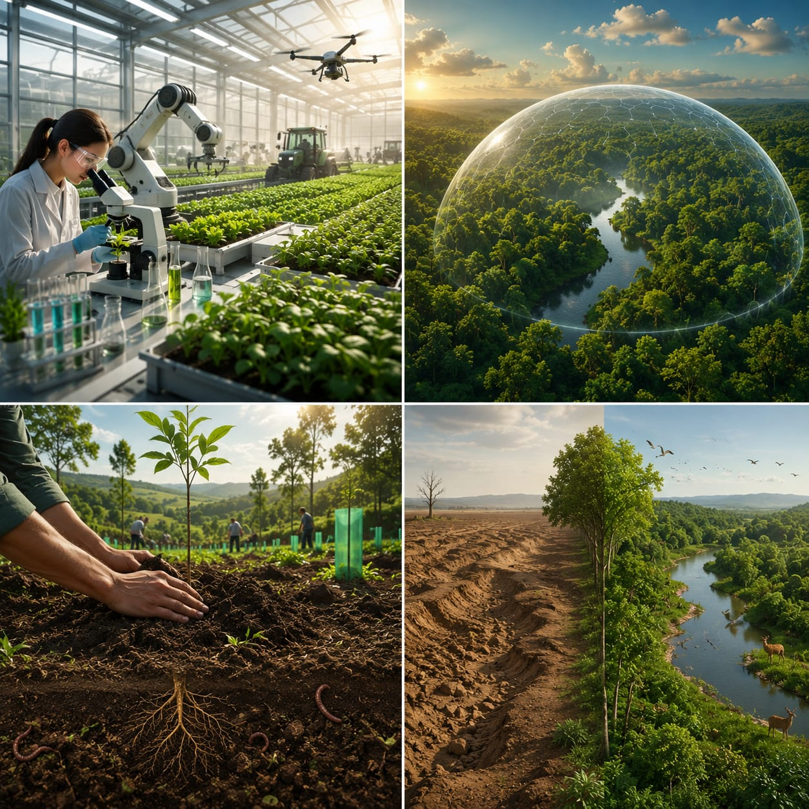

Um dos principais desafios do agronegócio é encontrar um equilíbrio entre a produção de alimentos e a preservação do meio ambiente. Com o aumento da demanda por produtos agrícolas, surge a necessidade de ampliar a produção sem causar impactos excessivos aos recursos naturais, como o solo, a água e a vegetação.
Para enfrentar esse desafio, é necessário ampliar os investimentos em pesquisas e tecnologias que permitam aumentar a produção sem causar maiores impactos ao meio ambiente.
Além disso, é importante fortalecer a proteção das áreas de preservação e estabelecer medidas que garantam espaços destinados ao plantio de árvores, contribuindo para a conservação do solo, a manutenção de sua fertilidade e a redução dos impactos ambientais.
